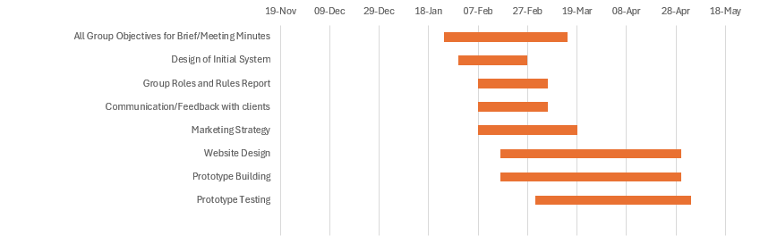
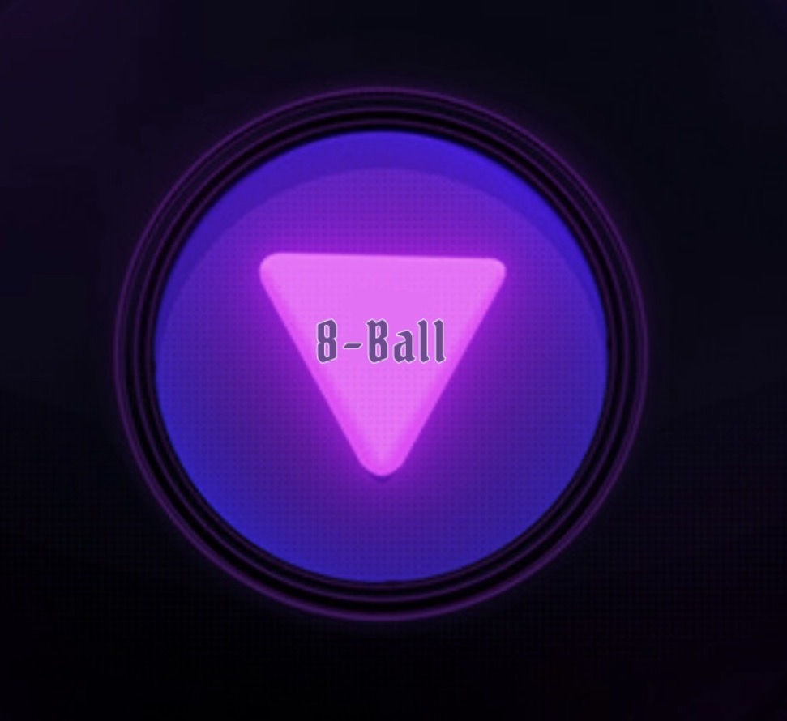
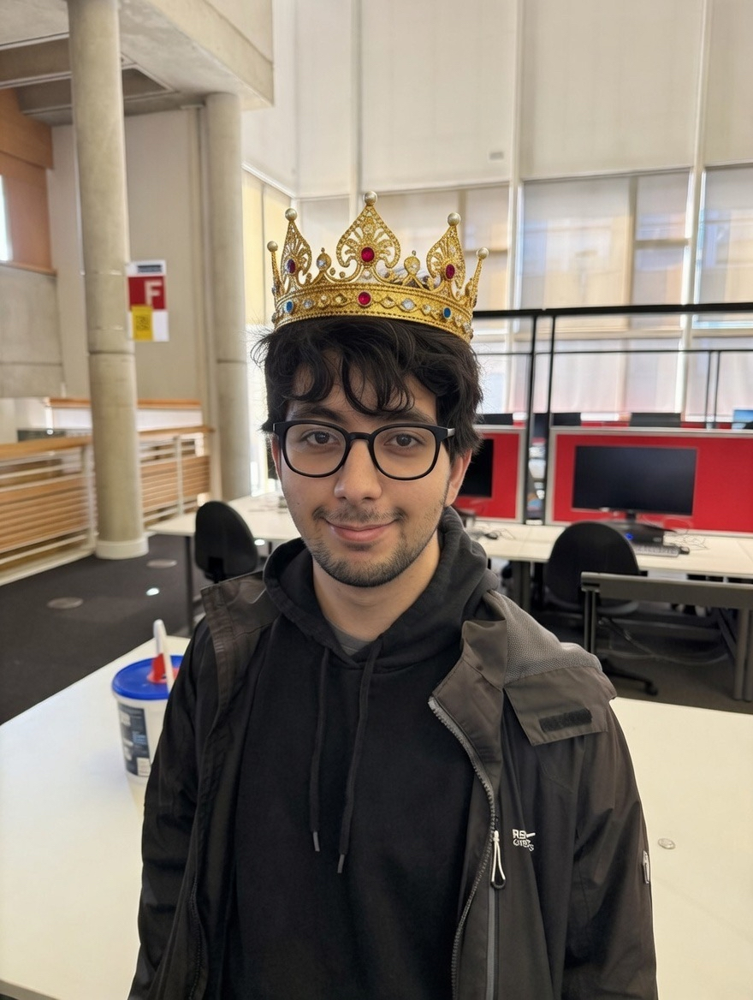
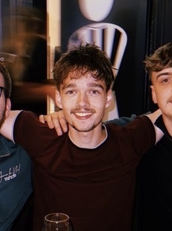
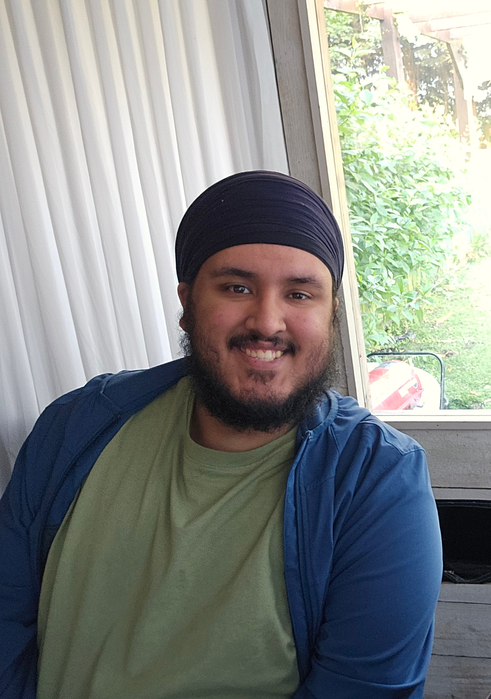
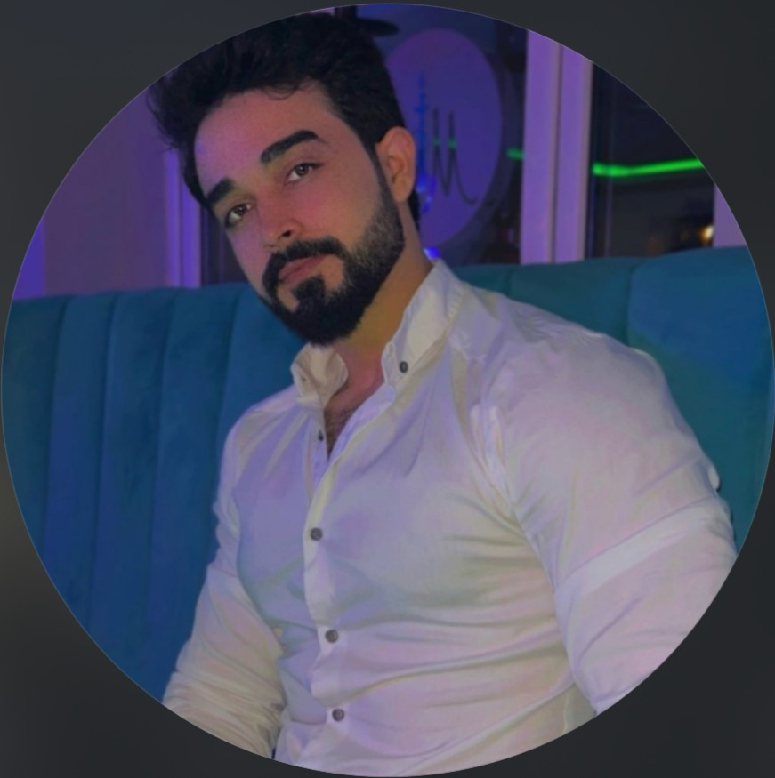
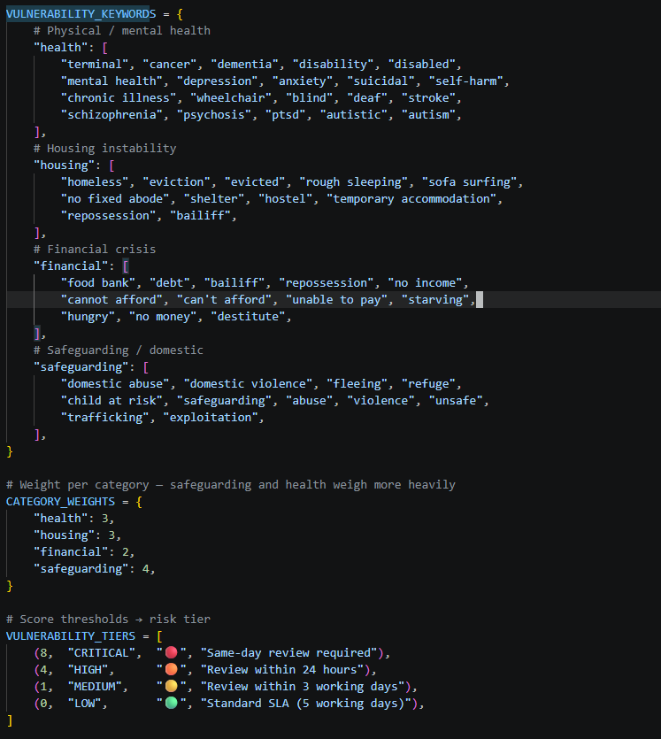

January
We started by creating a set of requirements and a project timeline, this timeline was in the form of a gantt chart and would help use track progress throughout the project.


At 8Ball Technologies, our identity is centred around trust, reassurance and problem solving. The name and branding are inspired by the Magic 8-Ball, which is traditionally associated with providing answers and guidance. This reflects our goal as a company: to develop reliable, innovative solutions that help organisations manage complex processes more efficiently and effectively.
As a company, we believe that technology should be used to support people and improve services, particularly within areas where delays and inefficiencies can have a serious impact on individuals. Our project focuses on supporting organisations within the UK public sector by using artificial intelligence and machine learning to streamline document processing and improve decision making. By reducing manual workloads and increasing efficiency, we aim to help organisations deliver a faster, more dependable service to the people who rely on them.
As a team, we understand the importance of reducing delays for vulnerable individuals who rely on support services. Long waiting times and inefficient document processing can create unnecessary stress, uncertainty and frustration for people who may already be facing difficult circumstances. Because of this, we aim to create technology that is secure, efficient and easy to use, helping organisations make faster, more accurate decisions through artificial intelligence and machine learning.
Our branding has been kept consistent throughout the website, marketing material and promotional content to make 8Ball Technologies easily recognisable and professional. Consistent branding helps clients and potential partners build familiarity with the company whilst also presenting us as organised, reliable and transparent in how we communicate and operate. We wanted the overall design of the company to feel modern, approachable and professional, reflecting both the technical side of the business and the supportive nature of our aims.
Alongside our branding, we have also focused heavily on communication and transparency with clients. Through our LinkedIn presence, promotional material and client interactions, we aim to build strong professional relationships and create confidence in the services we provide. Our marketing approach has been based around trust, consistency and direct engagement, allowing us to establish a recognisable identity despite operating on a zero-budget marketing model.
Overall, the 8Ball brand has been developed to represent clarity, support and certainty. We want clients to understand who we are, what we stand for and how our solutions can positively support both organisations and vulnerable individuals. Our aim is to continue developing technology that improves efficiency, reduces unnecessary delays and provides practical solutions to real-world problems.

Team Leader
Omer is our team leader here at 8Ball Technologies, a perfectionist with great passion for getting work done.

Web Developer
Leo is one of three developers on our team, and alongside Bilaavl has worked on this website you see before you.

Web Developer
Bilaavl is a skilled developer with expertise in both web development and software engineering.
Designer/Coordinator/Tester
Lacey is our head of coordination, lending her design skills to the poster aswell.
Marketer
Maciej is our marketer, who has helped us promote our services and show our work via social media.

Documentator
Monther is one of our documentors, making sure our documentation is clear and up-to-date.
Documentor/Coordinator
Dillon is another one of our documentors, and helps with coordination.
For the choice of OCR we chose Tesseract which is shown here its a free open source engine that converts images or scanned documents containing text to data here Tesseract reads the scanned letters and to ensure it can read it properly the image is converted to greyscale then pushed into pure black or pure white background so that the OCR engine isn't confused.
For this to work first it lowercases the text then for every keyword in every category checks if it appears. Each hit adds that categories weight to the score and records the trigger which is used to judge the vulnerability of the target its uses simple substring matching (if keyword in text lower) so this means that it will be flagged if the letter contains "i am suicidal" and "i am not suicidal" as the suicidal triggers it both some words can meet both vulnerability targets simply due to their meaning such as repossession for housing and finance as well as bailiff.
The vulnerability scoring engine works in a way that each keyword hit adds a weight to a running score. safeguarding terms carry the highest weight as they signal immediate risk. We deliberately avoided machine learning here a caseworker needs to be able to see exactly why a letter was flagged critical not a black box.

At the start of the project, we created a plan in order to shape our development process.
We started by creating a set of requirements and a project timeline, this timeline was in the form of a gantt chart and would help use track progress throughout the project.

This is when we started the majority of the objectives for the project.
In this month we continued development of the whitemail prototype, and consistently posted on linkedin following our marketing ideas.
April was where we started getting closer to the final product.
During May, the completion of the project began.